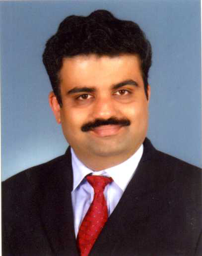

Academic leadership
Teaching and academic administration across BCA and MCA programmes, including Board of Studies and Board of Examinations responsibilities.
Professor, Department of MCA, PIM, Udupi
Educator, researcher and lifelong learner with experience in computer science education, academic leadership, renewable energy research, and the performing arts as a Carnatic violinist.

Teaching and academic administration across BCA and MCA programmes, including Board of Studies and Board of Examinations responsibilities.
Research interests include computer science and information systems, software engineering, Linux, networking and renewable energy management.
Supporting students through programming, computing fundamentals, practical learning and project-based activities.
A violinist by hobby and an experienced accompanying artist for vocalists and Bharatanatyam performers.